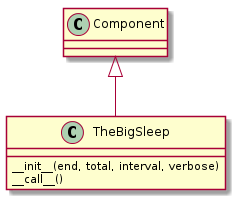

This is a plugin for The Big Sleep, code that does nothing but countdown. I guess it could be called count-down... Anyway.

TheBigSleep |
TheBigSleep has four parameters in its arguments so the configuration text will mirror that.
configuration = """
[{0}]
# to allow the section names to be arbitrary
# the plugin names are required
plugin = Sleep
# 'end' should be a timestamp for the end-time (11-12-2013 8:45 pm)
# 'total' should be a timestamp for the run-time (1 hr 23 minutes)
# 'interval' should be <amount> <units> (1 minute)
# if verbose is False, sceen output will be off except at startup
# only one of absolute or relative time is required, although both can be used
{1} = <absolute time>
{2} = <relative time>
{3} = 1 second
{4} = True
""".format(SLEEP_SECTION, END_OPTION,
TOTAL_OPTION,
INTERVAL_OPTION,
VERBOSE_OPTION)
The help-sections.
sections = OrderedDict()
sections['name'] = '{bold}sleep{reset} -- a countdown timer that blocks until time is over'
sections['description'] = '{bold}sleep{reset} is a verbose no-op (by default) meant to allow the insertion of a pause in the execution of the Tuna. At this point all calls to sleep will get the same configuration.'
sections['configuration'] = configuration
sections['see also'] = 'EventTimer, RelativeTime, AbsoluteTime'
sections['options'] = """
The configuration options --
{bold}end{reset} : an absolute time given as a time-stamp that can be interpreted by `dateutil.parser.parse`. This is for the cases where you have a specific time that you want the sleep to end.
{bold}total{reset} : a relative time given as pairs of '<amount> <units>' -- e.g. '3.4 hours'. Most units only use the first letter, but since `months` and `minutes` both start with `m`, you have to use two letters to specify them. The sleep will stop at the start of the sleep + the total time given.
{bold}interval{reset} : The amount of time beween reports of the time remaining (default = 1 second). Use the same formatting as the `total` option.
{bold}verbose{reset} : If True (the default) then report time remaining at specified intervals while the sleep runs.
One of {bold}end{reset} or {bold}total{reset} needs to be specified. Everything else is optional.
"""
sections['author'] = 'tuna'
Sleep |